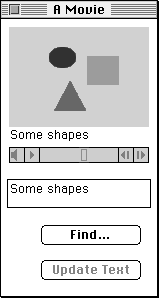
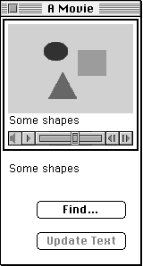

Text media tracks were introduced with QuickTime version 1.5 and have been further
improved in QuickTime 2.0 with the addition of calls for more powerful searching and
a new facility called burnt text. The big news is that text tracks are now supported in
QuickTime for Windows version 2.0, which makes text tracks a cross-platform
solution. If you're developing content-based products that need to be cross-platform,
you'll want to take a look at text tracks.
Text tracks give you the ability to embed text in a QuickTime movie, which is
particularly useful if you're aiming your product at international markets or at
people with hearing impairments (you can subtitle your movie) or if you want to
enable your users to perform searches (by including the script of a play or movie in a
text track, for instance, you can make it easy for users to find a particular scene by
searching for a key piece of dialog). The possibilities for adding value to your
QuickTime application and content with text tracks are limited only by your
imagination.
This column shows you how to add text track support to your QuickTime application,
including support for searching and editing. The sample program QTTextSample on this
issue's CD demonstrates what's involved. This small application plays a movie
controller-based movie in a window and offers users the ability to search for a
particular sequence of characters, or edit the text, in the text track.
Text tracks are handled by the text media handler, which is documented in the "Movie
Toolbox" chapter of Inside Macintosh: QuickTime. The text media handler's
functionality includes the following:
Searching is something that all applications that support text tracks will want to offer
the user, while editing text is likely to be something that only a few specialized
applications will want to provide. Editing of text can be accomplished with Movie
Toolbox routines, as discussed later in this column.
Your QuickTime application needs to do a few basic things at the outset, as
QTTextSample demonstrates. These include checking for the QuickTime version
number, growing your heap as large as possible, and checking return codes.
QuickTime version number. A Macintosh application that supports text tracks
requires QuickTime version 1.5 or later; a Windows application that supports text
tracks requires QuickTime 2.0 for Windows. On Macintosh platforms you can use the
Gestalt selector gestaltQuickTime to check that the version number returned in the
high-order word is greater than or equal to the required version (0x0150 for
QuickTime 1.5; 0x0200 for QuickTime 2.0).
Our sample program bails out if the system isn't running QuickTime version 1.5 or
later. If your application uses calls provided by later releases of QuickTime but you
also want it to run on earlier versions, you should check for the version number and
selectively enable your application's functionality accordingly.
Heap size. As discussed in the Somewhere in QuickTime column indevelop Issue 13
("Top 10 QuickTime Tips" by John Wang), you need to ensure that you grow your heap
as large as possible in your initialization code by calling the MaxApplZone routine.
QuickTime needs to use a lot of handle-based data structures, so you also need to ensure
that there are enough master pointers allocated in the base of your heap. To do that,
you should call MoreMasters a number of times (you can tell how many times by
examining your heap while the application is running). If you don't do this, your heap
may become fragmented, which in turn may cause certain QuickTime routines to fail
due to lack of memory. This is a general Macintosh programming issue that you should
be aware of for all applications.
Return codes. Finally, always check those return codes, and handle errors as
required. Most QuickTime routines return a status code of type OSErr; if this isn't
equal to noErr, you have problems. QuickTime is always trying to tell you something
-- listen and your life will be more complete!
The user interface for the sample application is pretty basic. Figure 1 shows the
application window. As you can see, the text for the movie is repeated below the movie
so that it can be edited. Buttons offer the user the options of finding specific text or
updating the text with editing changes. (The Update Text button is dimmed unless the
text in the text box has been modified.)

With text track selected

With movie selected
Figure 1. The application window for QTTextSample
Because the user can potentially edit two items -- the movie's text track or the movie
itself -- the application needs to keep track of what the user selected last (either text
or the movie) and highlight it in some way. As shown in Figure 1, when the text track
is selected in our sample application, the text below the movie has a black box around
it; when the movie is selected, the movie frame has a black box around it. When the
window is inactive (for example, when you switch applications), the box surrounding
the active item is rendered in gray.
In the sample code, the movie controller is stored in a record referenced by a handle
stored in the window's refCon, along with a few other bits and pieces related to the
movie and the text for a window. This gives us easy access to both the movie controller
and its associated movie:
aDocHdl = (DocHandle)GetWRefCon(theMovieWindow); aController = (**aDocHdl).myController; aMovie = MCGetMovie(aController);
When we need to locate the first track of a particular type (in our case a text track) in
a movie, we can use the following handy utility routine:
Track GetFirstTrackOfType (Movie aMovie,
OSType trackType)
{
Track theTrack = nil;
OSType mediaType;
short trackCount, index;
trackCount = GetMovieTrackCount(aMovie);
for (index=1; index <= trackCount; index++) {
Track t = GetMovieIndTrack(aMovie, index);
GetMediaHandlerDescription(GetTrackMedia(t),
&mediaType, nil, nil);
if (mediaType == trackType) {
theTrack = t;
break;
}
}
return theTrack;
}
A new function, GetMovieIndTrackType, was introduced with QuickTime 2.0 for both
Macintosh and Windows. GetMovieIndTrackType provides an easy way to iterate
through all tracks in a movie that are either of a given media type or that support a
particular media characteristic. Documentation for this, and the other new QuickTime
calls, can be found in the QuickTime 2.0 Developer's Kit which is available from Apple
Developer Catalog
By default, QuickTime displays the text for an enabled text track. We want to be able to
exercise more control over the format and display of the text track and to edit the text
embedded in the movie. Thus, we need to extract the text from the track and stuff it
into a TextEdit record.
Our application needs to be able to access the text for a particular frame as it's
displayed. We do this by defining a text-handling procedure (or textProc for short)
with the following format:
pascal OSErr MyTextProc (Handle thisText,
Movie thisMovie, short *displayFlag,
long refCon)
The text is passed in the handle. To access the text, we need to determine the length of
the text and store it somewhere.
// This yields the actual size of the text.
textSize = *(short*)(*thisText);
// This yields a pointer to the text.
textSamplePtr =
(char*)(*thisText + sizeof(short));
The style data for a text track is stored in one of two places. Information about the
default text style, together with other items of interest (such as the background
color), is stored in a text description handle (see page 2-291 ofInside Macintosh:
QuickTime). Additional information may be supplied at the end of the handle passed to
the textProc, in the form of 'styl' atoms (see page 2-290 of Inside Macintosh:
QuickTime). Our sample code demonstrates how to access the style information. To get
the text description, you need to call GetMediaSample in the textProc, as shown in
Listing 1. You need to parse the handle passed into your textProc to see if additional
information is supplied; the sample code illustrates how to do this.
Listing 1. Getting the text description
theErr = GetMediaSample(aMedia, myData, nil, nil, mediaCurrentTime,
nil, sampleDescriptionH, nil, nil, nil, nil);
...
if (sampleDescriptionH) {
scrapHdl = (StScrpHandle)NewHandle(sizeof(StScrpRec));
if (scrapHdl == nil)
CheckError(MemError(),
"\pCouldn't allocate memory for the style table");
(**scrapHdl).scrpNStyles = 1;
(**scrapHdl).scrpStyleTab[0] =
(**((TextDescriptionHandle)sampleDescriptionH)).defaultStyle;
// Delete the previous contents of the TextEditHandle.
TESetSelect(0, (**myDocTEH).teLength, myDocTEH);
TEDelete(myDocTEH);
// Insert the new text.
TEStylInsert(textPtr, textSize, scrapHdl, myDocTEH);
DisposeHandle((Handle)scrapHdl);
}
else TESetText(textPtr, textSize, myDocTEH);
We can control whether QuickTime also displays the text, by returning a value in the
displayFlag parameter. For example, if we want the default display, we set it in the
following way:
*displayFlag = txtProcDefaultDisplay;
Other flags are available either to suppress output or to ensure that QuickTime always
displays the text track, regardless of the settings saved in the movie. Check page
2-364 of Inside Macintosh: QuickTime for more details.
In order for the textProc we've defined to get called, we need to tell QuickTime about it.
This is easily accomplished with the SetMovieTextHandler routine (shown in Listing
2), which uses the utility routine described earlier to get the first text track.
Listing 2. The SetMovieTextHandler routine
OSErr SetMovieTextHandler (WindowPtr aWindow)
{
MediaHandler aMediaHandler;
MovieController aController;
Movie aMovie;
Track aTrack;
DocumentHandle aDocHdl;
aDocHdl = (DocumentHandle)GetWRefCon(aWindow);
aController = (**aDocHdl).myController;
if (aController != nil) {
aMovie = MCGetMovie(aController);
// If there's a text track in the movie, set the textProc.
if (aMovie != nil && (aTrack = GetFirstTrackOfType
(aMovie, TextMediaType)) != nil) {
aMediaHandler = GetMediaHandler(GetTrackMedia(aTrack));
if (aMediaHandler != nil)
SetTextProc(aMediaHandler, NewTextMediaProc(MyTextProc),
(long)aWindow);
}
}
return GetMoviesError();
}
One feature that should be provided in movies that have embedded text is the ability to
search for words. Consider a scenario where you're providing an interactive learning
experience. The video track of your QuickTime movie contains a play, and the text
track contains its script. Students can search for a particular scene just by searching
for a few words. If the play were Shakespeare's Julius Caesar, for example, searching
for "Lend me your ears" would find Marc Antony's speech at Caesar's funeral.
Searching for text in a movie is a straightforward operation using QuickTime's
FindNextText routine (which is described on page 2-298 of Inside Macintosh:
QuickTime). You can control the way this routine works by passing in the following
flags:
Under QuickTime 1.5 or 1.6, however, you shouldn't use all three of these flags
together in the same call; if you do, a bug will cause a bus error. You can work around
this by manually implementing a wrapped search. This was fixed in QuickTime 2.0.
The sample code illustrates the use of FindNextText in the
DoSearchForStringInMovieWindow routine. This routine gets the movie controller and
its associated movie from the movie window. We pass in the text to search for, the
direction to search in, and whether to wrap the search. The sample code shows one way
of doing this with a simple dialog.
The new routine MovieSearchText, which was added to the Movie Toolbox in QuickTime
2.0 and in QuickTime 2.0 for Windows, also aids in searching for text in a movie. It
can search any track that supports the text characteristic. (For a track to support the
text characteristic, it must implement the FindNextText and HiliteTextSample calls as
defined in the Movies.h file.) MovieSearchText is defined like this:
pascal OSErr MovieSearchText(Movie theMovie, Ptr text, long size, long searchFlags, Track *searchTrack, TimeValue *searchTime, long *searchOffset);
In this definition, theMovie is the movie to search, text is a pointer to a block of text
that contains the search string, and size is the length of the search string in bytes. The
other parameters are as follows:
If MovieSearchText doesn't succeed in finding the search string because either there
were no text tracks in the movie or the text simply wasn't found, an error value is
returned.
While the text media handler provides routines to add and delete text track segments, it
doesn't provide routines to edit the text contained in a text track. Most applications
won't need to edit text, but in case you're interested, this section looks at the Movie
Toolbox routines involved.
The DoUpdateText routine in the sample code shows how the user can edit the text
contained in a movie's text track. The steps involved in this process are listed below,
and the code to accomplish these steps is shown in Listing 3. Note that error checking
isn't included in this simplified version of the sample code; you'll find the complete
code on this issue's CD.
1. Determine which text track to edit.
2. Determine the segment of the track to be edited. To do this we need to find
the start time and duration of the sample we want to edit.
3. Delete the existing text using the start time and duration we've determined.
4. Add the text from the TextEdit handle into the media, using the QuickTime
routine AddTESample (described on page 2-295 of Inside Macintosh:
QuickTime). Then call the InsertMediaIntoTrack routine to insert the media we
just created into the track.
Like all movie editing operations, editing text will cause the movie to become
fragmented. You should ensure that the final production version of your movie is
flattened; this will remove any fragmentation introduced by editing.
Listing 3. The DoUpdateText routine, simplified version
// Step 1:
// Get the text track; remember to check that it's not nil.
aTrack = GetFirstTrackOfType(aMovie, TextMediaType);
...
// Step 2:
// Get the media time of the current sample.
mediaCurrentTime = TrackTimeToMediaTime(currentTime, aTrack);
...
// Get detailed information on start and duration of the current
// sample (this is used later).
MediaTimeToSampleNum(aMedia, mediaCurrentTime, &mediaSampleIndex,
&mediaSampleStartTime, &mediaSampleDuration);
...
// Look back and find where this text starts.
theErr = GetTrackNextInterestingTime(aTrack,
nextTimeMediaSample | nextTimeEdgeOK, currentTime,
-kFix1, &interestingTime, nil);
currentTime = interestingTime;
// Determine the duration of this sample.
theErr = GetTrackNextInterestingTime(aTrack,
nextTimeMediaSample | nextTimeEdgeOK, currentTime,
kFix1, &interestingTime, &theDuration);
...
// Step 3:
// Tell the media that we're about to edit stuff.
theErr = BeginMediaEdits(aMedia);
...
// Delete whatever was there before.
theErr = DeleteTrackSegment(aTrack, interestingTime, theDuration);
...
// Step 4:
// Write out the new data to the media.
theErr = AddTESample(aMediaHandler, aTEH,
(RGBColor *)&theTextColor, teFlushDefault, nil,
dfClipToTextBox, 0, 0, 0, nil, mediaSampleDuration,
&sampleTime);
...
// Insert the new media into the track.
theErr = InsertMediaIntoTrack(aTrack, interestingTime, sampleTime,
mediaSampleDuration, kFix1);
...
theErr = EndMediaEdits(aMedia);
...
QuickTime 1.6 introduced the capability for applications to apply special effects to the
text in text tracks, notably antialiased text and drop shadows. Antialiased text is
generally easier to read and looks more attractive than fonts rendered in the normal
manner. However, antialiasing text takes time, and the performance penalty that's
incurred playing movies with antialiased text tracks limits their usefulness.
QuickTime 2.0 allows applications to prerender text tracks, with a new facility called
burnt text. Burnt text not only incurs less of a performance penalty than antialiased
text but also has the advantage that a font doesn't need to be installed on the target
machine in order to be rendered correctly. Applications that want to take advantage of
this facility need to write data to the movie file in the form of a number of new atoms;
for information on these additional atoms, see the file Text Imaging in QuickTime 2.0,
accompanying this column on the CD.
Adding text track support to QuickTime applications really makes sense. With just a
few lines of code, you can add a great deal of functionality. Most applications that use
text tracks won't need to support editing the text, but it's a good idea to support
searching because it provides an easy and powerful way of indexing into a movie
containing text tracks.
Take a look at the sample code on the CD. It will help you get started with adding basic
searching to your applications and (if required) with more advanced text track
features, such as editing. Have fun!
NICK THOMPSON (AppleLink NICKT) found his first job in a surfboard factory,
gluing wetsuits together. Then he scammed a job finishing custom surfboards.
Somewhere along the way he learned how to program, and he's been riding that wave
ever since. Last summer he snagged a job at Apple in Developer Technical Support and
moved from London to California. Now he dresses up in a neoprene seal suit on
weekends and goes shark fishing in the cold Pacific, armed only with a surfboard. (The
glue from his first job must have affected his brain.)
Thanks to Ken Doyle, C. K. Haun, Peter Hoddie, Don Johnson, and John Wang for
reviewing this column.